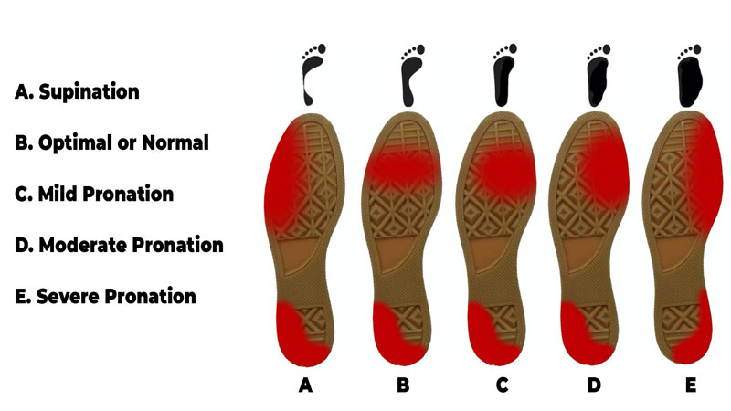

Tips & Tricks
Overzicht onderwerpen:
- Verschillende technieken
- Schoenen
- Soorten training
Verschillende techieken
Pronatie & supinatie:
Wanneer lichaamsgewicht wordt geplaatst op de buitenkant van de voet tijdens het lopen of hardlopen, is het bekend als supinatie. Wanneer het gewicht meer op de binnenkant van de voet wordt geplaatst, wordt het aangeduid als pronatie. Een gemakkelijke manier om het verschil te onderscheiden en te onthouden is dat supinatie “op” heeft in het woord. In een goede stap, moet de voet van de hiel naar de teen met het lichaamsgewicht van een persoon gelijkmatig verdeeld op hun voeten, waardoor ze een neutrale pronatie.
Landen op je voeten:
Als je met je hiel op de grond landt voordat de rest van je voet landt, ben je misschien wat bekend staat als een heel striker. De stappen van de meeste mensen en op welk deel van de voet ze landen zal enigszins variëren gedurende een run of van de ene run naar de andere. Heel strikers maken het grootste deel van de tijd contact met de grond met hun hiel. Of dit goed of slecht is, valt echter te bespreken. Als je een natuurlijke heel striker bent en niet vaak gewond raakt, heb je waarschijnlijk niets om je zorgen te maken. Aan de andere kant, als u voortdurend knie of andere pijn na een run, kunt u overwegen om te proberen te verschuiven van uw hardlopen techniek naar een midden- of voorvoet stap om te zien of dit helpt.
Positie handen:
Probeer je handen op het niveau van de taille te houden, ongeveer waar ze je heup licht kunnen poetsen. Je armen moeten worden gebogen op een hoek van 90 graden. Sommige beginners hebben de neiging om hun handen ver bij hun borst te houden, vooral als ze moe worden. Je kunt zelfs nog meer moe worden door je armen op die manier vast te houden en je zult spanning en spanning in je schouders en nek beginnen te voelen.
Postuur:
Hou je houding recht. Je hoofd moet op, je rug recht, en schouders niveau. Houd je schouders onder je oren en houd een neutraal bekken. Zorg ervoor dat je niet naar voren of terug naar je taille leunt, wat sommige renners doen als ze moe worden. Controleer je houding af en toe. Wanneer je vermoeid bent aan het einde van je run, is het gebruikelijk om een beetje te vallen, wat kan leiden tot nek, schouder en rugpijn. Als je het gevoel hebt dat je voorover begint te buigen, probeer dan je borst uit te steken.
Schoenen
Wat zijn de beste schoenen voor jou?
Afhankelijk van hoe jij rent en welke afstanden je wil rennen is het misschien waard om te kijken naar een paar schoenen wat goed bij jou stijl past. Bij iemand die rent met over-pronatie komt een ander slijtagepatroon onder de schoen dan bij iemand die rent met supinatie en kan dus misschien ook profiteren van een ander soort zolen in de schoen.
Hier onder is een link naar een handige site om schoenen te vinden die goed bij jou passen:
Soorten training
Makkelijke runs:
Dit zijn meestal relatief korte runs op een comfortabel tempo. Het is niet de bedoeling dat je hierna moe bent.
Hoog tempo runs:
Dit zijn meestal korte tot middelmatige afstand runs op een hoog tempo. Hierna ben je erg moe.
Lange runs:
Dit zijn lange afstanden op een comfortabel tempo. Meestal worden de lange runs op een zondag gedaan.
Interval training:
Er zijn veel verschillende soorten interval training, maar waar het om gaat is dat je vaak wisselt tussen hoog en laag tempo in dezelfde run. Je kan bijvoorbeeld eerst een kilometer hard rennen en daarna een kilometer zacht, etc. Maar je zou het ook met stukken van 200m of 500m kunnen doen.